Calm, close, and edited to stay out of the way.
A maternity portrait series, shot and edited by me, indoors at home and outdoors, in colour and black and white. I mixed the settings so the set has both quiet, close frames and open, airy ones.
I used black and white on the closest frames so attention stays on expression and gesture, and kept the colour sets natural. The editing is light: colour balance, brightness and contrast, so skin tones and clothing read true and nothing looks over-processed.
Before and after
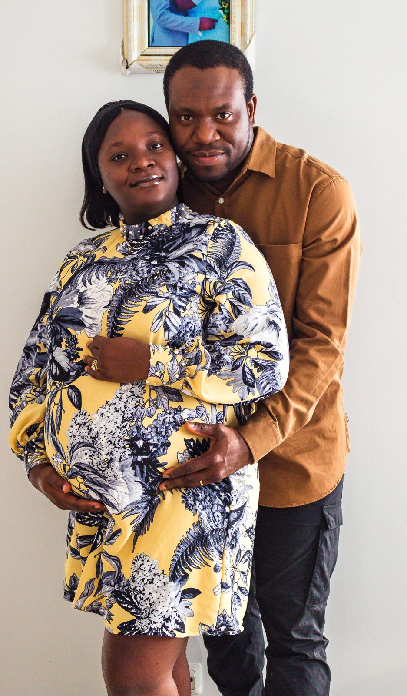
The series
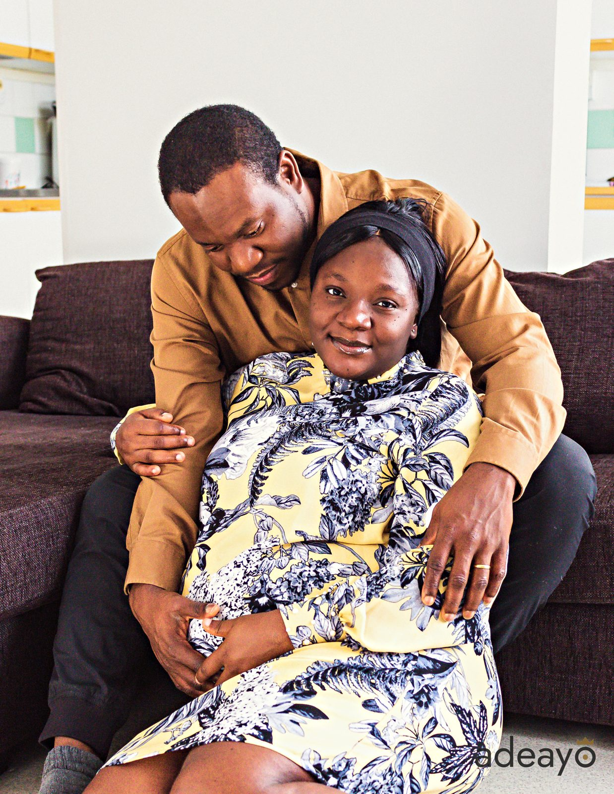
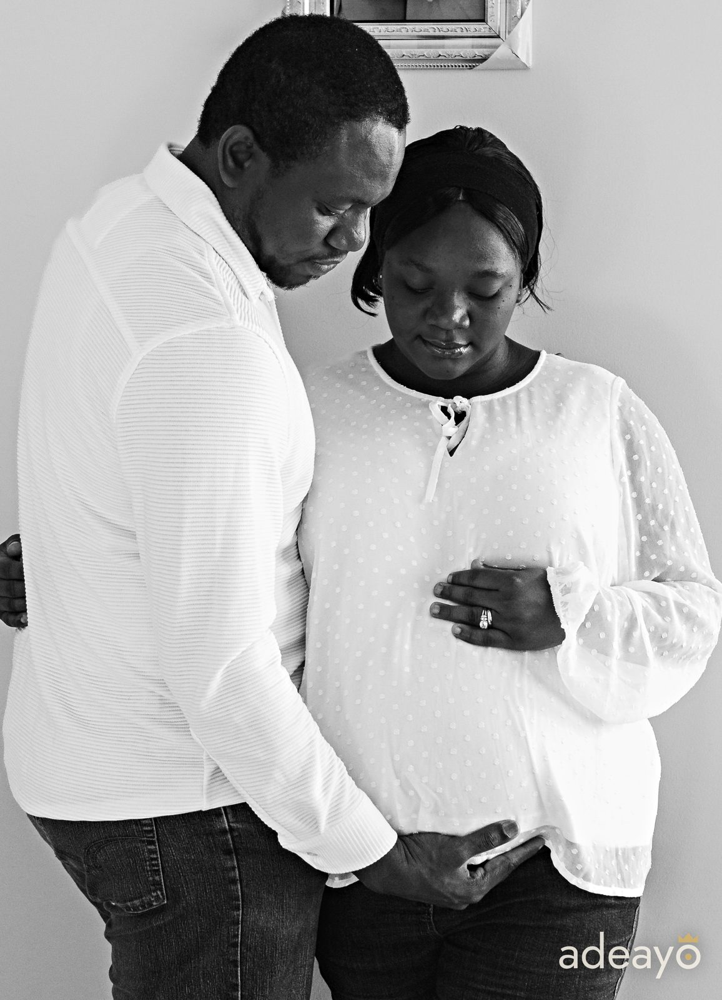
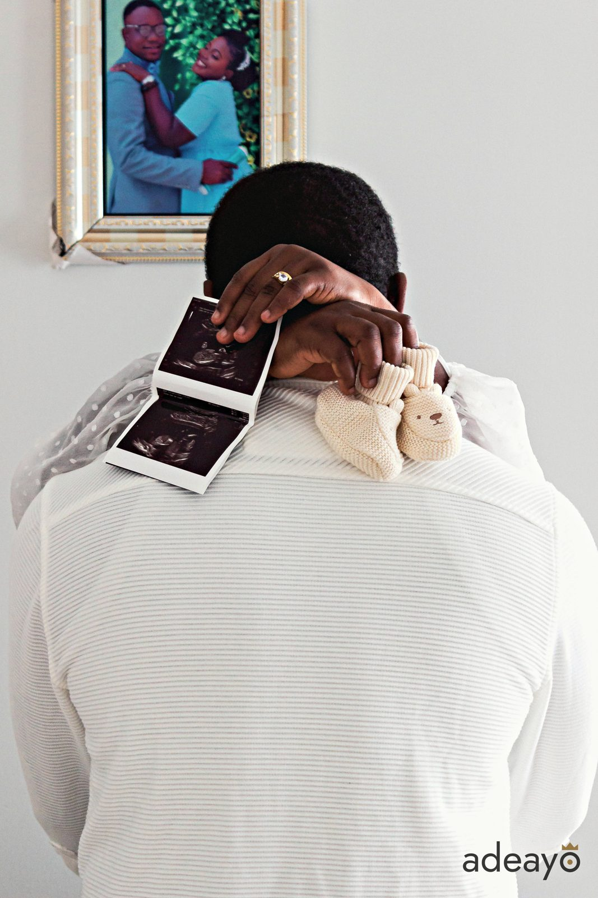
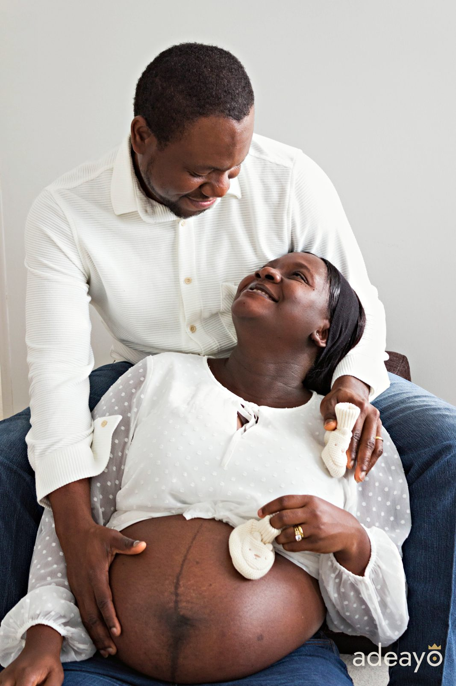
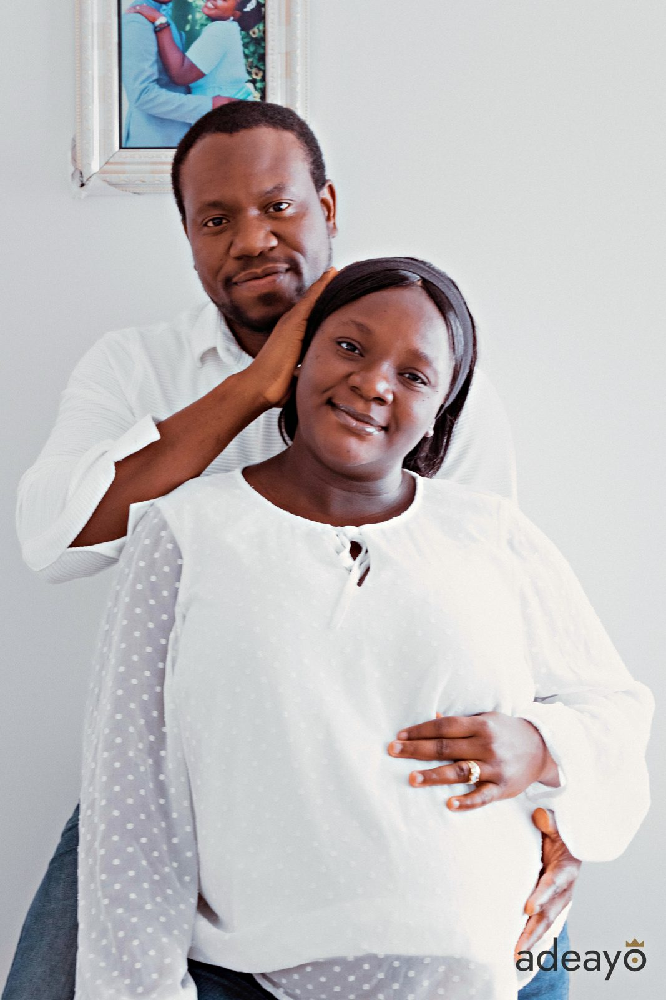
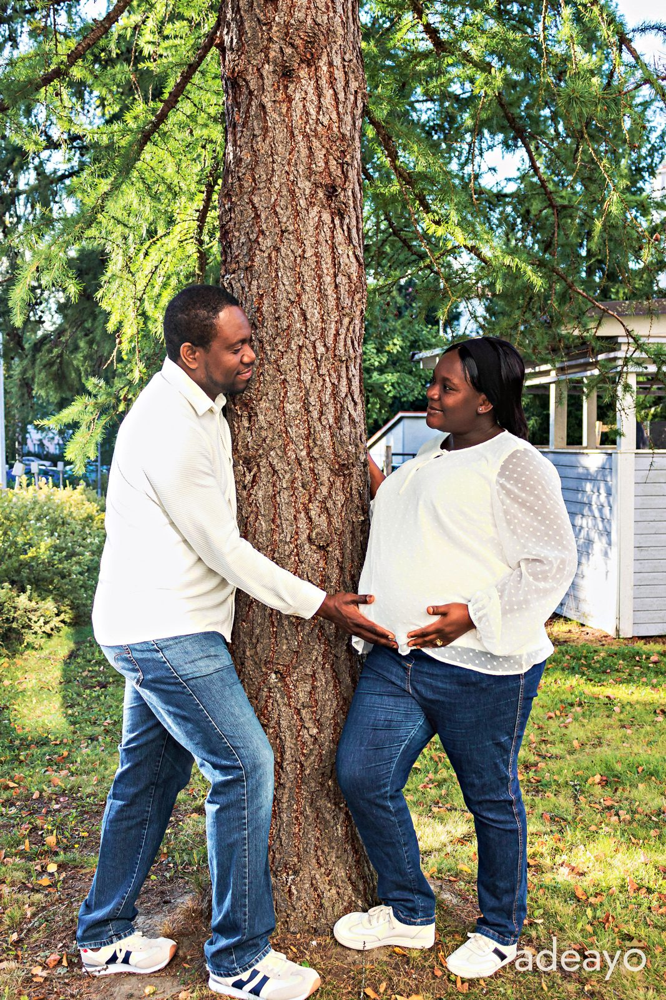
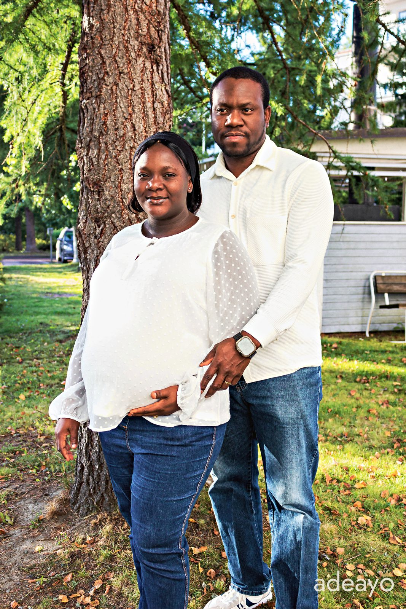
One headline, then when and where.
Event and social graphics, mostly for RCCG Hosanna Chapel Tampere in 2023, plus a social post for Kryptal. Most people meet a flyer for about a second, in a phone feed.
So each one has one dominant headline, a clear block for date, time and place, and the church's mark in the same spot. Each gets its own theme (seasonal, comic, illustrative) so the series stays recognisable without every flyer looking the same.
The Kryptal post follows the same rule: a relaxed person with a phone, one line (Learn, Trade and Be Confident), one next step.

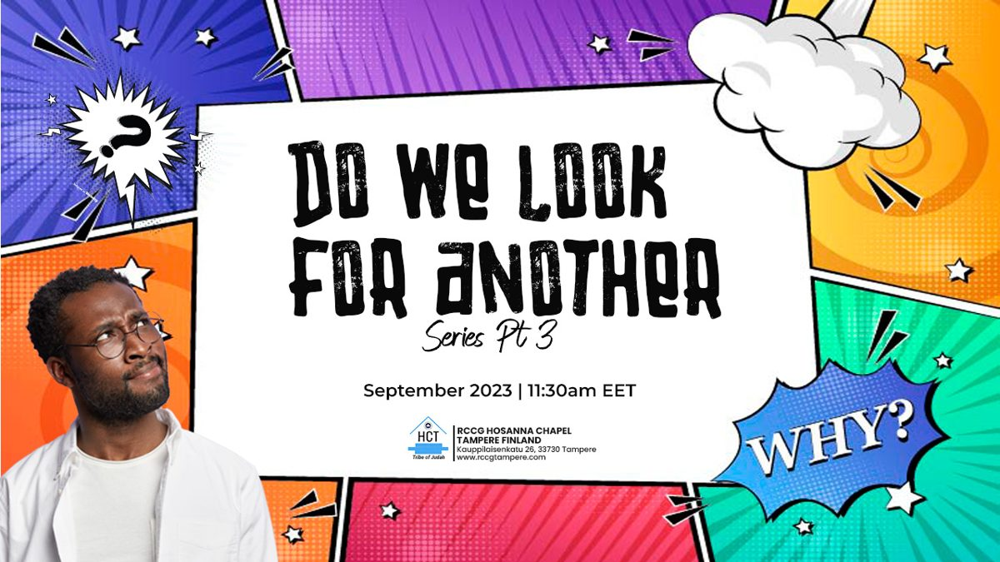
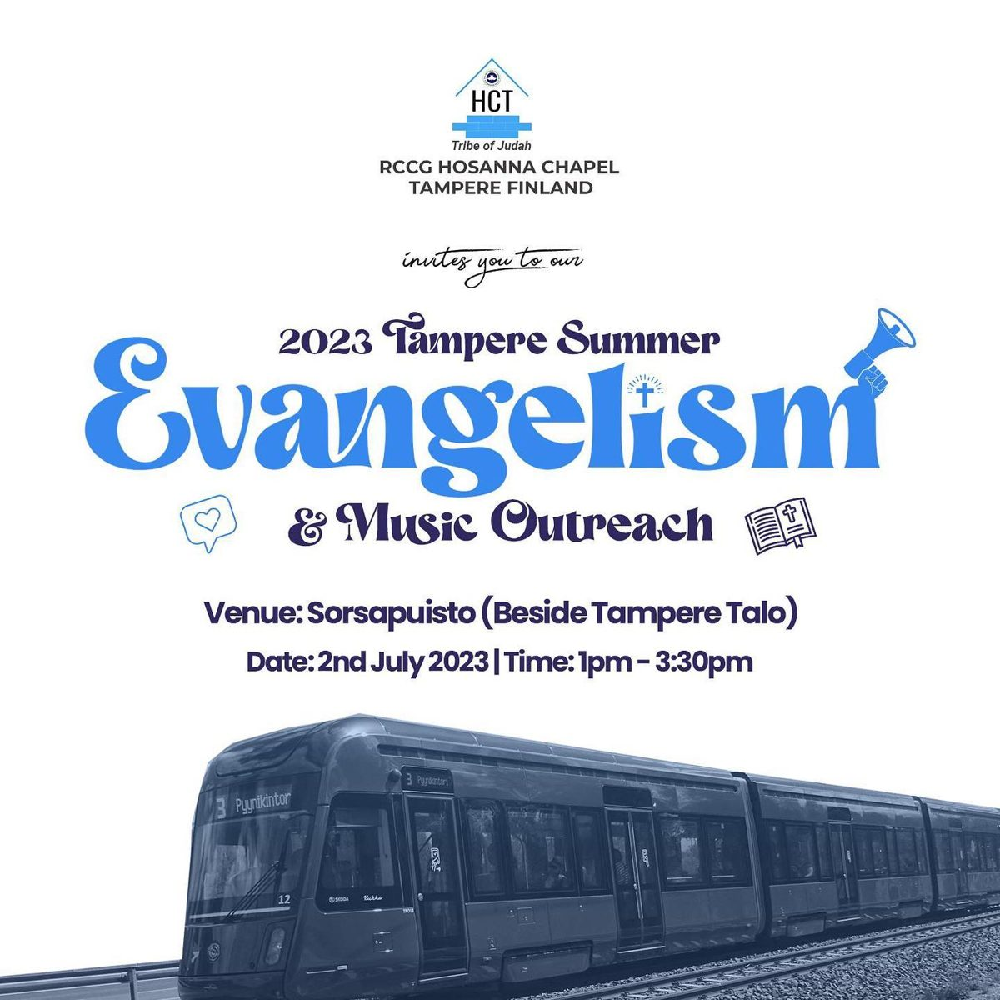
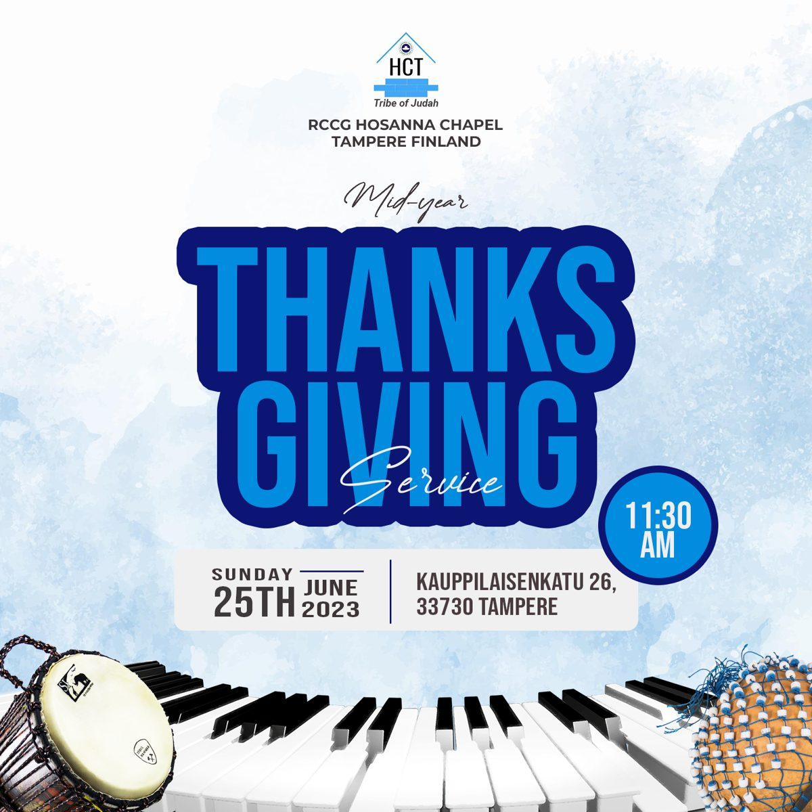
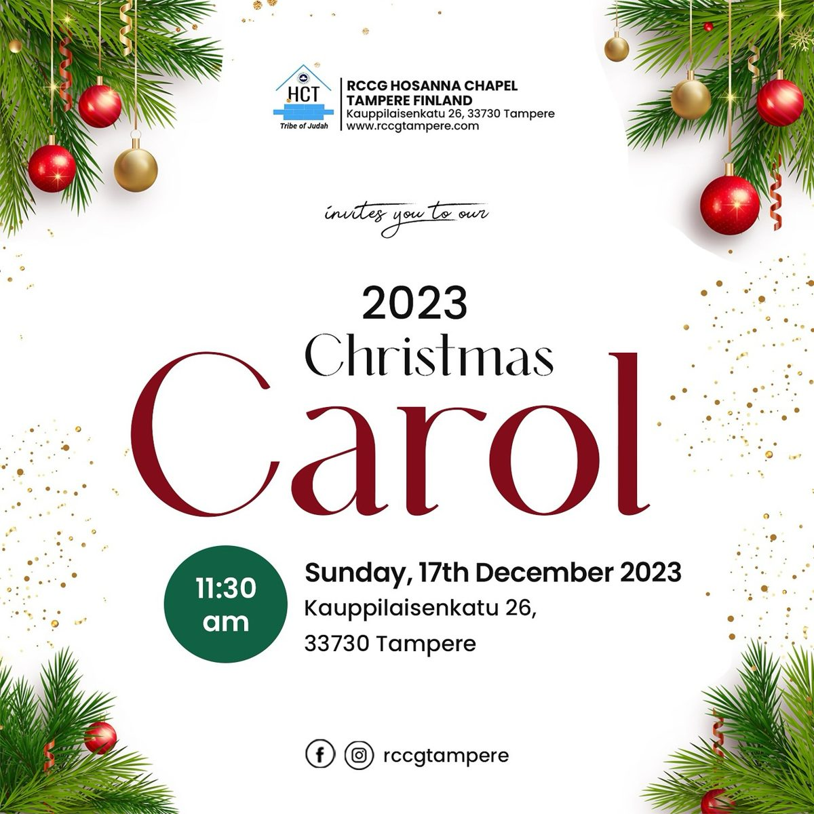
Made for the phone it will be watched on.
A birthday story in vertical format, because that is how it will be watched and shared. I kept it to about a minute so it holds attention to the end.
Same habit: clarity over clutter.
In product design I look for the friction that gets in someone's way and design it out. In visual work the friction is anything that slows the viewer: a crowded flyer, a time that is hard to find, an over-edited face.
The method is the same in both: decide what the person needs first, then remove the rest.
Let's make something people use.
Open to product design, junior digital design and content roles. Available immediately.
- Emailoyerooluwatosin.ayo@gmail.com
- LinkedInin/oluwatosinoyero
- Behanceoyerooluwatosin1